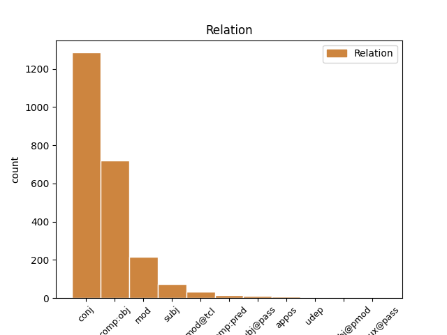
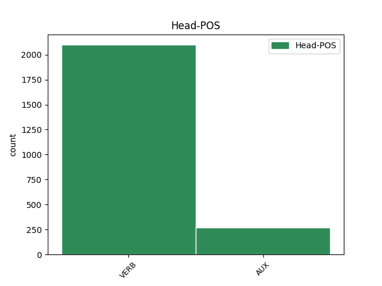
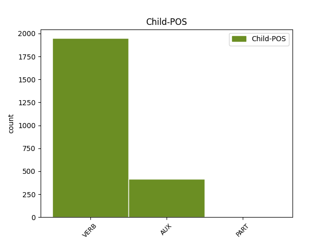

Distribution of features within this leaf



Agreement Rules sorted by frequency.
- When the dependent token is the conjunct(conj) of the head token, and the dependent token is VERB.
1 Coeficientul _ _ _ _ 0 _ _ _
2 de _ _ _ _ 0 _ _ _
3 variație _ _ _ _ 0 _ _ _
4 este fi AUX Vmip3s Mood=Ind|Number=Sing|Person=3|Tense=Pres|VerbForm=Fin 0 _ _ _
5 o _ _ _ _ 0 _ _ _
6 statistică _ _ _ _ 0 _ _ _
7 relativă _ _ _ _ 0 _ _ _
8 a _ _ _ _ 0 _ _ _
9 dispersiei _ _ _ _ 0 _ _ _
10 și _ _ _ _ 0 _ _ _
11 se _ _ _ _ 0 _ _ _
12 folosește folosi VERB Vmip3s Mood=Ind|Number=Sing|Person=3|Tense=Pres|VerbForm=Fin 4 conj _ _
13 la _ _ _ _ 0 _ _ _
14 compararea _ _ _ _ 0 _ _ _
15 dispersiei _ _ _ _ 0 _ _ _
16 diferitelor _ _ _ _ 0 _ _ _
17 variabile _ _ _ _ 0 _ _ _
18 ( _ _ _ _ 0 _ _ _
19 caracteristici _ _ _ _ 0 _ _ _
20 ) _ _ _ _ 0 _ _ _
21 . _ _ _ _ 0 _ _ _
1 V _ _ _ _ 0 _ _ _
2 poate putea VERB Vmip3s Mood=Ind|Number=Sing|Person=3|Tense=Pres|VerbForm=Fin 0 _ _ _
3 lua lua VERB Vmnp Tense=Pres|VerbForm=Inf 2 comp:obj _ _
4 valori _ _ _ _ 0 _ _ _
5 între _ _ _ _ 0 _ _ _
6 0 _ _ _ _ 0 _ _ _
7 și _ _ _ _ 0 _ _ _
8 100% _ _ _ _ 0 _ _ _
9 . _ _ _ _ 0 _ _ _
1 Un _ _ _ _ 0 _ _ _
2 răspuns _ _ _ _ 0 _ _ _
3 la _ _ _ _ 0 _ _ _
4 această _ _ _ _ 0 _ _ _
5 întrebare _ _ _ _ 0 _ _ _
6 poate putea VERB Vmip3s Mood=Ind|Number=Sing|Person=3|Tense=Pres|VerbForm=Fin 0 _ _ _
7 fi fi AUX Vanp Tense=Pres|VerbForm=Inf 6 comp:obj _ _
8 dat _ _ _ _ 0 _ _ _
9 cu _ _ _ _ 0 _ _ _
10 inegalitatea _ _ _ _ 0 _ _ _
11 lui _ _ _ _ 0 _ _ _
12 Cebîșev _ _ _ _ 0 _ _ _
13 din _ _ _ _ 0 _ _ _
14 care _ _ _ _ 0 _ _ _
15 rezultă _ _ _ _ 0 _ _ _
16 că _ _ _ _ 0 _ _ _
17 pentru _ _ _ _ 0 _ _ _
18 orice _ _ _ _ 0 _ _ _
19 serie _ _ _ _ 0 _ _ _
20 de _ _ _ _ 0 _ _ _
21 distribuție _ _ _ _ 0 _ _ _
22 fracțiunea _ _ _ _ 0 _ _ _
23 de _ _ _ _ 0 _ _ _
24 date _ _ _ _ 0 _ _ _
25 situată _ _ _ _ 0 _ _ _
26 la _ _ _ _ 0 _ _ _
27 cel _ _ _ _ 0 _ _ _
28 mult _ _ _ _ 0 _ _ _
29 k _ _ _ _ 0 _ _ _
30 unități _ _ _ _ 0 _ _ _
31 de _ _ _ _ 0 _ _ _
32 deviație _ _ _ _ 0 _ _ _
33 standard _ _ _ _ 0 _ _ _
34 față _ _ _ _ 0 _ _ _
35 de _ _ _ _ 0 _ _ _
36 medie _ _ _ _ 0 _ _ _
37 este _ _ _ _ 0 _ _ _
38 cel _ _ _ _ 0 _ _ _
39 puțin _ _ _ _ 0 _ _ _
40 1 _ _ _ _ 0 _ _ _
41 - _ _ _ _ 0 _ _ _
42 1 _ _ _ _ 0 _ _ _
43 / _ _ _ _ 0 _ _ _
44 ( _ _ _ _ 0 _ _ _
45 k _ _ _ _ 0 _ _ _
46 * _ _ _ _ 0 _ _ _
47 k _ _ _ _ 0 _ _ _
48 ) _ _ _ _ 0 _ _ _
49 , _ _ _ _ 0 _ _ _
50 unde _ _ _ _ 0 _ _ _
51 k _ _ _ _ 0 _ _ _
52 este _ _ _ _ 0 _ _ _
53 un _ _ _ _ 0 _ _ _
54 număr _ _ _ _ 0 _ _ _
55 pozitiv _ _ _ _ 0 _ _ _
56 oarecare _ _ _ _ 0 _ _ _
57 mai _ _ _ _ 0 _ _ _
58 mare _ _ _ _ 0 _ _ _
59 ca _ _ _ _ 0 _ _ _
60 1 _ _ _ _ 0 _ _ _
61 . _ _ _ _ 0 _ _ _
1 Dacă _ _ _ _ 0 _ _ _
2 V _ _ _ _ 0 _ _ _
3 este _ _ _ _ 0 _ _ _
4 aproape _ _ _ _ 0 _ _ _
5 de _ _ _ _ 0 _ _ _
6 zero _ _ _ _ 0 _ _ _
7 ( _ _ _ _ 0 _ _ _
8 V _ _ _ _ 0 _ _ _
9 < _ _ _ _ 0 _ _ _
10 35% _ _ _ _ 0 _ _ _
11 ) _ _ _ _ 0 _ _ _
12 , _ _ _ _ 0 _ _ _
13 atunci _ _ _ _ 0 _ _ _
14 populația _ _ _ _ 0 _ _ _
15 studiată _ _ _ _ 0 _ _ _
16 statistic _ _ _ _ 0 _ _ _
17 este fi AUX Vmip3s Mood=Ind|Number=Sing|Person=3|Tense=Pres|VerbForm=Fin 0 _ _ _
18 omogenă _ _ _ _ 0 _ _ _
19 și _ _ _ _ 0 _ _ _
20 media _ _ _ _ 0 _ _ _
21 m _ _ _ _ 0 _ _ _
22 este fi AUX Vmip3s Mood=Ind|Number=Sing|Person=3|Tense=Pres|VerbForm=Fin 17 conj _ _
23 reprezentativă _ _ _ _ 0 _ _ _
24 pentru _ _ _ _ 0 _ _ _
25 această _ _ _ _ 0 _ _ _
26 populație _ _ _ _ 0 _ _ _
27 . _ _ _ _ 0 _ _ _
1 În _ _ _ _ 0 _ _ _
2 particular _ _ _ _ 0 _ _ _
3 , _ _ _ _ 0 _ _ _
4 este _ _ _ _ 0 _ _ _
5 util _ _ _ _ 0 _ _ _
6 să _ _ _ _ 0 _ _ _
7 se _ _ _ _ 0 _ _ _
8 știe _ _ _ _ 0 _ _ _
9 ce _ _ _ _ 0 _ _ _
10 se _ _ _ _ 0 _ _ _
11 întâmplă întâmpla VERB Vmis3s Mood=Ind|Number=Sing|Person=3|Tense=Past|VerbForm=Fin 0 _ _ _
12 cu _ _ _ _ 0 _ _ _
13 valorile _ _ _ _ 0 _ _ _
14 f _ _ _ _ 0 _ _ _
15 ( _ _ _ _ 0 _ _ _
16 x _ _ _ _ 0 _ _ _
17 ) _ _ _ _ 0 _ _ _
18 ale _ _ _ _ 0 _ _ _
19 funcției _ _ _ _ 0 _ _ _
20 când _ _ _ _ 0 _ _ _
21 x _ _ _ _ 0 _ _ _
22 se _ _ _ _ 0 _ _ _
23 apropie apropia VERB Vmis3s Mood=Ind|Number=Sing|Person=3|Tense=Past|VerbForm=Fin 11 mod _ _
24 din _ _ _ _ 0 _ _ _
25 ce _ _ _ _ 0 _ _ _
26 în _ _ _ _ 0 _ _ _
27 ce _ _ _ _ 0 _ _ _
28 mai _ _ _ _ 0 _ _ _
29 mult _ _ _ _ 0 _ _ _
30 de _ _ _ _ 0 _ _ _
31 punctul _ _ _ _ 0 _ _ _
32 a _ _ _ _ 0 _ _ _
33 . _ _ _ _ 0 _ _ _
1 Se _ _ _ _ 0 _ _ _
2 poate putea VERB Vmip3s Mood=Ind|Number=Sing|Person=3|Tense=Pres|VerbForm=Fin 0 _ _ _
3 pune pune VERB Vmnp Tense=Pres|VerbForm=Inf 2 subj _ _
4 întrebarea _ _ _ _ 0 _ _ _
5 ce _ _ _ _ 0 _ _ _
6 reprezintă _ _ _ _ 0 _ _ _
7 ea _ _ _ _ 0 _ _ _
8 în _ _ _ _ 0 _ _ _
9 realitate _ _ _ _ 0 _ _ _
10 ? _ _ _ _ 0 _ _ _
1 Am _ _ _ _ 0 _ _ _
2 neglijat _ _ _ _ 0 _ _ _
3 energia _ _ _ _ 0 _ _ _
4 cinetică _ _ _ _ 0 _ _ _
5 a _ _ _ _ 0 _ _ _
6 electronilor _ _ _ _ 0 _ _ _
7 la _ _ _ _ 0 _ _ _
8 catod _ _ _ _ 0 _ _ _
9 , _ _ _ _ 0 _ _ _
10 astfel _ _ _ _ 0 _ _ _
11 că _ _ _ _ 0 _ _ _
12 atunci _ _ _ _ 0 _ _ _
13 când _ _ _ _ 0 _ _ _
14 electronii _ _ _ _ 0 _ _ _
15 lovesc lovi VERB Vmip3p Mood=Ind|Number=Plur|Person=3|Tense=Pres|VerbForm=Fin 17 mod@tcl _ _
16 ținta _ _ _ _ 0 _ _ _
17 au avea VERB Vmip3p Mood=Ind|Number=Plur|Person=3|Tense=Pres|VerbForm=Fin 0 _ _ _
18 o _ _ _ _ 0 _ _ _
19 energie _ _ _ _ 0 _ _ _
20 cinetică _ _ _ _ 0 _ _ _
21 eU _ _ _ _ 0 _ _ _
22 , _ _ _ _ 0 _ _ _
23 U _ _ _ _ 0 _ _ _
24 fiind _ _ _ _ 0 _ _ _
25 diferența _ _ _ _ 0 _ _ _
26 de _ _ _ _ 0 _ _ _
27 potențial _ _ _ _ 0 _ _ _
28 aplicată _ _ _ _ 0 _ _ _
29 electrozilor _ _ _ _ 0 _ _ _
30 , _ _ _ _ 0 _ _ _
31 iar _ _ _ _ 0 _ _ _
32 e _ _ _ _ 0 _ _ _
33 sarcina _ _ _ _ 0 _ _ _
34 electronului _ _ _ _ 0 _ _ _
35 . _ _ _ _ 0 _ _ _
1 Un _ _ _ _ 0 _ _ _
2 răspuns _ _ _ _ 0 _ _ _
3 la _ _ _ _ 0 _ _ _
4 această _ _ _ _ 0 _ _ _
5 întrebare _ _ _ _ 0 _ _ _
6 poate _ _ _ _ 0 _ _ _
7 fi _ _ _ _ 0 _ _ _
8 dat _ _ _ _ 0 _ _ _
9 cu _ _ _ _ 0 _ _ _
10 inegalitatea _ _ _ _ 0 _ _ _
11 lui _ _ _ _ 0 _ _ _
12 Cebîșev _ _ _ _ 0 _ _ _
13 din _ _ _ _ 0 _ _ _
14 care _ _ _ _ 0 _ _ _
15 rezultă _ _ _ _ 0 _ _ _
16 că _ _ _ _ 0 _ _ _
17 pentru _ _ _ _ 0 _ _ _
18 orice _ _ _ _ 0 _ _ _
19 serie _ _ _ _ 0 _ _ _
20 de _ _ _ _ 0 _ _ _
21 distribuție _ _ _ _ 0 _ _ _
22 fracțiunea _ _ _ _ 0 _ _ _
23 de _ _ _ _ 0 _ _ _
24 date _ _ _ _ 0 _ _ _
25 situată _ _ _ _ 0 _ _ _
26 la _ _ _ _ 0 _ _ _
27 cel _ _ _ _ 0 _ _ _
28 mult _ _ _ _ 0 _ _ _
29 k _ _ _ _ 0 _ _ _
30 unități _ _ _ _ 0 _ _ _
31 de _ _ _ _ 0 _ _ _
32 deviație _ _ _ _ 0 _ _ _
33 standard _ _ _ _ 0 _ _ _
34 față _ _ _ _ 0 _ _ _
35 de _ _ _ _ 0 _ _ _
36 medie _ _ _ _ 0 _ _ _
37 este fi AUX Vmip3s Mood=Ind|Number=Sing|Person=3|Tense=Pres|VerbForm=Fin 0 _ _ _
38 cel _ _ _ _ 0 _ _ _
39 puțin _ _ _ _ 0 _ _ _
40 1 _ _ _ _ 0 _ _ _
41 - _ _ _ _ 0 _ _ _
42 1 _ _ _ _ 0 _ _ _
43 / _ _ _ _ 0 _ _ _
44 ( _ _ _ _ 0 _ _ _
45 k _ _ _ _ 0 _ _ _
46 * _ _ _ _ 0 _ _ _
47 k _ _ _ _ 0 _ _ _
48 ) _ _ _ _ 0 _ _ _
49 , _ _ _ _ 0 _ _ _
50 unde _ _ _ _ 0 _ _ _
51 k _ _ _ _ 0 _ _ _
52 este fi AUX Vmip3s Mood=Ind|Number=Sing|Person=3|Tense=Pres|VerbForm=Fin 37 mod _ _
53 un _ _ _ _ 0 _ _ _
54 număr _ _ _ _ 0 _ _ _
55 pozitiv _ _ _ _ 0 _ _ _
56 oarecare _ _ _ _ 0 _ _ _
57 mai _ _ _ _ 0 _ _ _
58 mare _ _ _ _ 0 _ _ _
59 ca _ _ _ _ 0 _ _ _
60 1 _ _ _ _ 0 _ _ _
61 . _ _ _ _ 0 _ _ _
1 problema _ _ _ _ 0 _ _ _
2 de _ _ _ _ 0 _ _ _
3 probabilitate _ _ _ _ 0 _ _ _
4 este fi AUX Vmip3s Mood=Ind|Number=Sing|Person=3|Tense=Pres|VerbForm=Fin 0 _ _ _
5 dacă _ _ _ _ 0 _ _ _
6 scoatem _ _ _ _ 0 _ _ _
7 o _ _ _ _ 0 _ _ _
8 bilă _ _ _ _ 0 _ _ _
9 , _ _ _ _ 0 _ _ _
10 care _ _ _ _ 0 _ _ _
11 este fi AUX Vmip3s Mood=Ind|Number=Sing|Person=3|Tense=Pres|VerbForm=Fin 4 subj _ _
12 șansa _ _ _ _ 0 _ _ _
13 ca _ _ _ _ 0 _ _ _
14 aceasta _ _ _ _ 0 _ _ _
15 să _ _ _ _ 0 _ _ _
16 fie _ _ _ _ 0 _ _ _
17 albă _ _ _ _ 0 _ _ _
18 ? _ _ _ _ 0 _ _ _
1 S- _ _ _ _ 0 _ _ _
2 ar _ _ _ _ 0 _ _ _
3 putea _ _ _ _ 0 _ _ _
4 spune spune VERB Vmnp Tense=Pres|VerbForm=Inf 0 _ _ _
5 că _ _ _ _ 0 _ _ _
6 , _ _ _ _ 0 _ _ _
7 o _ _ _ _ 0 _ _ _
8 dată _ _ _ _ 0 _ _ _
9 cu _ _ _ _ 0 _ _ _
10 Tudor _ _ _ _ 0 _ _ _
11 Arghezi _ _ _ _ 0 _ _ _
12 , _ _ _ _ 0 _ _ _
13 pătrunde pătrunde VERB Vmip3s Mood=Ind|Number=Sing|Person=3|Tense=Pres|VerbForm=Fin 4 subj@pass _ _
14 sau _ _ _ _ 0 _ _ _
15 revine _ _ _ _ 0 _ _ _
16 în _ _ _ _ 0 _ _ _
17 literatura _ _ _ _ 0 _ _ _
18 noastră _ _ _ _ 0 _ _ _
19 conștiința _ _ _ _ 0 _ _ _
20 artistului _ _ _ _ 0 _ _ _
21 meșteșugar _ _ _ _ 0 _ _ _
22 . _ _ _ _ 0 _ _ _
1 Agenții _ _ _ _ 0 _ _ _
2 noi _ _ _ _ 0 _ _ _
3 activi _ _ _ _ 0 _ _ _
4 pe _ _ _ _ 0 _ _ _
5 bacteriile _ _ _ _ 0 _ _ _
6 negative _ _ _ _ 0 _ _ _
7 sunt fi AUX Vaip3p Mood=Ind|Number=Plur|Person=3|Tense=Pres|VerbForm=Fin 0 _ _ _
8 tigecyclina tigecyclina VERB Vmnp Tense=Pres|VerbForm=Inf 7 comp:pred _ _
9 ( _ _ _ _ 0 _ _ _
10 din _ _ _ _ 0 _ _ _
11 familia _ _ _ _ 0 _ _ _
12 glycylcycline _ _ _ _ 0 _ _ _
13 ) _ _ _ _ 0 _ _ _
14 de _ _ _ _ 0 _ _ _
15 uz _ _ _ _ 0 _ _ _
16 parenteral _ _ _ _ 0 _ _ _
17 și _ _ _ _ 0 _ _ _
18 doripenem _ _ _ _ 0 _ _ _
19 , _ _ _ _ 0 _ _ _
20 o _ _ _ _ 0 _ _ _
21 carbapenemă _ _ _ _ 0 _ _ _
22 cu _ _ _ _ 0 _ _ _
23 acțiune _ _ _ _ 0 _ _ _
24 asemănătoare _ _ _ _ 0 _ _ _
25 meropenemului _ _ _ _ 0 _ _ _
26 . _ _ _ _ 0 _ _ _
1 Să _ _ _ _ 0 _ _ _
2 se _ _ _ _ 0 _ _ _
3 stabilească stabili VERB Vmsp3 Mood=Sub|Person=3|Tense=Pres|VerbForm=Fin 0 _ _ _
4 dacă _ _ _ _ 0 _ _ _
5 un _ _ _ _ 0 _ _ _
6 număr _ _ _ _ 0 _ _ _
7 este _ _ _ _ 0 _ _ _
8 sau _ _ _ _ 0 _ _ _
9 nu _ _ _ _ 0 _ _ _
10 palindrom _ _ _ _ 0 _ _ _
11 ( _ _ _ _ 0 _ _ _
12 are avea VERB Vmip3s Mood=Ind|Number=Sing|Person=3|Tense=Pres|VerbForm=Fin 3 appos _ _
13 aceeași _ _ _ _ 0 _ _ _
14 reprezentare _ _ _ _ 0 _ _ _
15 citit _ _ _ _ 0 _ _ _
16 de _ _ _ _ 0 _ _ _
17 la _ _ _ _ 0 _ _ _
18 stânga _ _ _ _ 0 _ _ _
19 sau _ _ _ _ 0 _ _ _
20 de _ _ _ _ 0 _ _ _
21 la _ _ _ _ 0 _ _ _
22 dreapta _ _ _ _ 0 _ _ _
23 ) _ _ _ _ 0 _ _ _
24 . _ _ _ _ 0 _ _ _
1 ( _ _ _ _ 0 _ _ _
2 2 _ _ _ _ 0 _ _ _
3 ) _ _ _ _ 0 _ _ _
4 Un _ _ _ _ 0 _ _ _
5 stat _ _ _ _ 0 _ _ _
6 membru _ _ _ _ 0 _ _ _
7 nu _ _ _ _ 0 _ _ _
8 este fi AUX Vaip3s Mood=Ind|Number=Sing|Person=3|Tense=Pres|VerbForm=Fin 0 _ _ _
9 obligat _ _ _ _ 0 _ _ _
10 , _ _ _ _ 0 _ _ _
11 în _ _ _ _ 0 _ _ _
12 temeiul _ _ _ _ 0 _ _ _
13 alineatului _ _ _ _ 0 _ _ _
14 ( _ _ _ _ 0 _ _ _
15 1 _ _ _ _ 0 _ _ _
16 ) _ _ _ _ 0 _ _ _
17 , _ _ _ _ 0 _ _ _
18 să _ _ _ _ 0 _ _ _
19 refuze refuza VERB Vmsp3 Mood=Sub|Person=3|Tense=Pres|VerbForm=Fin 8 udep _ _
20 propriilor _ _ _ _ 0 _ _ _
21 resortisanți _ _ _ _ 0 _ _ _
22 accesul _ _ _ _ 0 _ _ _
23 pe _ _ _ _ 0 _ _ _
24 teritoriul _ _ _ _ 0 _ _ _
25 său _ _ _ _ 0 _ _ _
26 . _ _ _ _ 0 _ _ _
1 Prin _ _ _ _ 0 _ _ _
2 urmare _ _ _ _ 0 _ _ _
3 , _ _ _ _ 0 _ _ _
4 variabilele _ _ _ _ 0 _ _ _
5 externe _ _ _ _ 0 _ _ _
6 au avea VERB Vmip3p Mood=Ind|Number=Plur|Person=3|Tense=Pres|VerbForm=Fin 0 _ _ _
7 ca _ _ _ _ 0 _ _ _
8 domeniu _ _ _ _ 0 _ _ _
9 ( _ _ _ _ 0 _ _ _
10 sunt fi AUX Vaip3p Mood=Ind|Number=Plur|Person=3|Tense=Pres|VerbForm=Fin 6 appos _ _
11 văzute _ _ _ _ 0 _ _ _
12 și _ _ _ _ 0 _ _ _
13 pot _ _ _ _ 0 _ _ _
14 fi _ _ _ _ 0 _ _ _
15 accesate _ _ _ _ 0 _ _ _
16 din _ _ _ _ 0 _ _ _
17 ) _ _ _ _ 0 _ _ _
18 întregul _ _ _ _ 0 _ _ _
19 fișier _ _ _ _ 0 _ _ _
20 sursă _ _ _ _ 0 _ _ _
21 în _ _ _ _ 0 _ _ _
22 care _ _ _ _ 0 _ _ _
23 sunt _ _ _ _ 0 _ _ _
24 definite _ _ _ _ 0 _ _ _
25 . _ _ _ _ 0 _ _ _
1 Cerea cere VERB Vmii3s Mood=Ind|Number=Sing|Person=3|Tense=Imp|VerbForm=Fin 0 _ _ _
2 bani _ _ _ _ 0 _ _ _
3 de _ _ _ _ 0 _ _ _
4 la _ _ _ _ 0 _ _ _
5 cine _ _ _ _ 0 _ _ _
6 putea putea VERB Vmii3s Mood=Ind|Number=Sing|Person=3|Tense=Imp|VerbForm=Fin 1 comp:obj@pmod _ SpaceAfter=No
7 , _ _ _ _ 0 _ _ _
8 spre _ _ _ _ 0 _ _ _
9 a _ _ _ _ 0 _ _ _
10 trăi _ _ _ _ 0 _ _ _
11 pe _ _ _ _ 0 _ _ _
12 un _ _ _ _ 0 _ _ _
13 picior _ _ _ _ 0 _ _ _
14 mai _ _ _ _ 0 _ _ _
15 convenabil _ _ _ _ 0 _ _ _
16 . _ _ _ _ 0 _ _ _
1 Măsurile _ _ _ _ 0 _ _ _
2 construite _ _ _ _ 0 _ _ _
3 din _ _ _ _ 0 _ _ _
4 materiale _ _ _ _ 0 _ _ _
5 ale _ _ _ _ 0 _ _ _
6 căror _ _ _ _ 0 _ _ _
7 dimensiuni _ _ _ _ 0 _ _ _
8 se _ _ _ _ 0 _ _ _
9 pot _ _ _ _ 0 _ _ _
10 altera altera VERB Vmnp Tense=Pres|VerbForm=Inf 0 _ _ _
11 fizic _ _ _ _ 0 _ _ _
12 când _ _ _ _ 0 _ _ _
13 sunt fi AUX Vaip3p Mood=Ind|Number=Plur|Person=3|Tense=Pres|VerbForm=Fin 10 mod@tcl _ _
14 supuse _ _ _ _ 0 _ _ _
15 unui _ _ _ _ 0 _ _ _
16 domeniu _ _ _ _ 0 _ _ _
17 larg _ _ _ _ 0 _ _ _
18 de _ _ _ _ 0 _ _ _
19 umiditate _ _ _ _ 0 _ _ _
20 relativă _ _ _ _ 0 _ _ _
21 pot _ _ _ _ 0 _ _ _
22 fi _ _ _ _ 0 _ _ _
23 incluse _ _ _ _ 0 _ _ _
24 numai _ _ _ _ 0 _ _ _
25 în _ _ _ _ 0 _ _ _
26 clasele _ _ _ _ 0 _ _ _
27 II _ _ _ _ 0 _ _ _
28 și _ _ _ _ 0 _ _ _
29 III _ _ _ _ 0 _ _ _
30 . _ _ _ _ 0 _ _ _
Disagree Examples:
1 Aparatul _ _ _ _ 0 _ _ _
2 care _ _ _ _ 0 _ _ _
3 se _ _ _ _ 0 _ _ _
4 numea _ _ _ _ 0 _ _ _
5 tele-ecran _ _ _ _ 0 _ _ _
6 , _ _ _ _ 0 _ _ _
7 putea putea VERB Vmii3s Mood=Ind|Number=Sing|Person=3|Tense=Imp|VerbForm=Fin 0 _ _ _
8 fi fi AUX Vanp Tense=Pres|VerbForm=Inf 7 comp:obj _ _
9 dat _ _ _ _ 0 _ _ _
10 mai _ _ _ _ 0 _ _ _
11 încet _ _ _ _ 0 _ _ _
12 , _ _ _ _ 0 _ _ _
13 dar _ _ _ _ 0 _ _ _
14 nu _ _ _ _ 0 _ _ _
15 aveai _ _ _ _ 0 _ _ _
16 cum _ _ _ _ 0 _ _ _
17 să _ _ _ _ 0 _ _ _
18 -l _ _ _ _ 0 _ _ _
19 închizi _ _ _ _ 0 _ _ _
20 de _ _ _ _ 0 _ _ _
21 tot _ _ _ _ 0 _ _ _
22 . _ _ _ _ 0 _ _ _
1 O _ _ _ _ 0 _ _ _
2 dată _ _ _ _ 0 _ _ _
3 , _ _ _ _ 0 _ _ _
4 când _ _ _ _ 0 _ _ _
5 treceau trece VERB Vmii3p Mood=Ind|Number=Plur|Person=3|Tense=Imp|VerbForm=Fin 15 mod _ _
6 unul _ _ _ _ 0 _ _ _
7 pe _ _ _ _ 0 _ _ _
8 lângă _ _ _ _ 0 _ _ _
9 altul _ _ _ _ 0 _ _ _
10 pe _ _ _ _ 0 _ _ _
11 coridor _ _ _ _ 0 _ _ _
12 , _ _ _ _ 0 _ _ _
13 ea _ _ _ _ 0 _ _ _
14 îi _ _ _ _ 0 _ _ _
15 aruncase arunca VERB Vmil3s Mood=Ind|Number=Sing|Person=3|Tense=Pqp|VerbForm=Fin 0 _ _ _
16 o _ _ _ _ 0 _ _ _
17 privire _ _ _ _ 0 _ _ _
18 piezișă _ _ _ _ 0 _ _ _
19 care _ _ _ _ 0 _ _ _
20 parcă _ _ _ _ 0 _ _ _
21 -l _ _ _ _ 0 _ _ _
22 străpunsese _ _ _ _ 0 _ _ _
23 și _ _ _ _ 0 _ _ _
24 pentru _ _ _ _ 0 _ _ _
25 o _ _ _ _ 0 _ _ _
26 clipă _ _ _ _ 0 _ _ _
27 fusese _ _ _ _ 0 _ _ _
28 cuprins _ _ _ _ 0 _ _ _
29 de _ _ _ _ 0 _ _ _
30 o _ _ _ _ 0 _ _ _
31 groază _ _ _ _ 0 _ _ _
32 oarbă _ _ _ _ 0 _ _ _
33 . _ _ _ _ 0 _ _ _
1 Oricum _ _ _ _ 0 _ _ _
2 , _ _ _ _ 0 _ _ _
3 avea _ _ _ _ 0 _ _ _
4 înfățișarea _ _ _ _ 0 _ _ _
5 unui _ _ _ _ 0 _ _ _
6 om _ _ _ _ 0 _ _ _
7 cu _ _ _ _ 0 _ _ _
8 care _ _ _ _ 0 _ _ _
9 puteai putea VERB Vmii2s Mood=Ind|Number=Sing|Person=2|Tense=Imp|VerbForm=Fin 0 _ _ _
10 sta sta VERB Vmnp Tense=Pres|VerbForm=Inf 9 comp:obj _ _
11 de _ _ _ _ 0 _ _ _
12 vorbă _ _ _ _ 0 _ _ _
13 , _ _ _ _ 0 _ _ _
14 dacă _ _ _ _ 0 _ _ _
15 ai _ _ _ _ 0 _ _ _
16 fi _ _ _ _ 0 _ _ _
17 putut _ _ _ _ 0 _ _ _
18 cumva _ _ _ _ 0 _ _ _
19 păcăli _ _ _ _ 0 _ _ _
20 tele-ecranul _ _ _ _ 0 _ _ _
21 și _ _ _ _ 0 _ _ _
22 să _ _ _ _ 0 _ _ _
23 -l _ _ _ _ 0 _ _ _
24 prinzi _ _ _ _ 0 _ _ _
25 singur _ _ _ _ 0 _ _ _
26 . _ _ _ _ 0 _ _ _
1 Goldstein _ _ _ _ 0 _ _ _
2 era _ _ _ _ 0 _ _ _
3 un _ _ _ _ 0 _ _ _
4 renegat _ _ _ _ 0 _ _ _
5 și _ _ _ _ 0 _ _ _
6 un _ _ _ _ 0 _ _ _
7 decăzut _ _ _ _ 0 _ _ _
8 care _ _ _ _ 0 _ _ _
9 , _ _ _ _ 0 _ _ _
10 odată _ _ _ _ 0 _ _ _
11 , _ _ _ _ 0 _ _ _
12 cu _ _ _ _ 0 _ _ _
13 mult _ _ _ _ 0 _ _ _
14 timp _ _ _ _ 0 _ _ _
15 în _ _ _ _ 0 _ _ _
16 urmă _ _ _ _ 0 _ _ _
17 - _ _ _ _ 0 _ _ _
18 nimeni _ _ _ _ 0 _ _ _
19 nu _ _ _ _ 0 _ _ _
20 -și _ _ _ _ 0 _ _ _
21 mai _ _ _ _ 0 _ _ _
22 amintea _ _ _ _ 0 _ _ _
23 cu _ _ _ _ 0 _ _ _
24 siguranță _ _ _ _ 0 _ _ _
25 cât _ _ _ _ 0 _ _ _
26 anume _ _ _ _ 0 _ _ _
27 - _ _ _ _ 0 _ _ _
28 fusese _ _ _ _ 0 _ _ _
29 una _ _ _ _ 0 _ _ _
30 din _ _ _ _ 0 _ _ _
31 figurile _ _ _ _ 0 _ _ _
32 de _ _ _ _ 0 _ _ _
33 frunte _ _ _ _ 0 _ _ _
34 ale _ _ _ _ 0 _ _ _
35 Partidului _ _ _ _ 0 _ _ _
36 , _ _ _ _ 0 _ _ _
37 aproape _ _ _ _ 0 _ _ _
38 la _ _ _ _ 0 _ _ _
39 același _ _ _ _ 0 _ _ _
40 nivel _ _ _ _ 0 _ _ _
41 cu _ _ _ _ 0 _ _ _
42 Fratele _ _ _ _ 0 _ _ _
43 cel _ _ _ _ 0 _ _ _
44 Mare _ _ _ _ 0 _ _ _
45 însuși _ _ _ _ 0 _ _ _
46 , _ _ _ _ 0 _ _ _
47 dar _ _ _ _ 0 _ _ _
48 pe _ _ _ _ 0 _ _ _
49 urmă _ _ _ _ 0 _ _ _
50 se _ _ _ _ 0 _ _ _
51 angajase _ _ _ _ 0 _ _ _
52 în _ _ _ _ 0 _ _ _
53 activități _ _ _ _ 0 _ _ _
54 contrarevoluționare _ _ _ _ 0 _ _ _
55 , _ _ _ _ 0 _ _ _
56 fusese _ _ _ _ 0 _ _ _
57 condamnat _ _ _ _ 0 _ _ _
58 la _ _ _ _ 0 _ _ _
59 moarte _ _ _ _ 0 _ _ _
60 dar _ _ _ _ 0 _ _ _
61 , _ _ _ _ 0 _ _ _
62 nu _ _ _ _ 0 _ _ _
63 se _ _ _ _ 0 _ _ _
64 știe ști VERB Vmip3s Mood=Ind|Number=Sing|Person=3|Tense=Pres|VerbForm=Fin 67 mod _ _
65 cum _ _ _ _ 0 _ _ _
66 , _ _ _ _ 0 _ _ _
67 scăpase scăpa VERB Vmil3s Mood=Ind|Number=Sing|Person=3|Tense=Pqp|VerbForm=Fin 0 _ _ _
68 și _ _ _ _ 0 _ _ _
69 dispăruse _ _ _ _ 0 _ _ _
70 ca _ _ _ _ 0 _ _ _
71 prin _ _ _ _ 0 _ _ _
72 minune _ _ _ _ 0 _ _ _
73 . _ _ _ _ 0 _ _ _
1 Lui _ _ _ _ 0 _ _ _
2 Winston _ _ _ _ 0 _ _ _
3 i _ _ _ _ 0 _ _ _
4 se _ _ _ _ 0 _ _ _
5 crispase crispa VERB Vmil3s Mood=Ind|Number=Sing|Person=3|Tense=Pqp|VerbForm=Fin 0 _ _ _
6 diafragma diafragma VERB Vmnp Tense=Pres|VerbForm=Inf 5 subj _ SpaceAfter=No
7 . _ _ _ _ 0 _ _ _